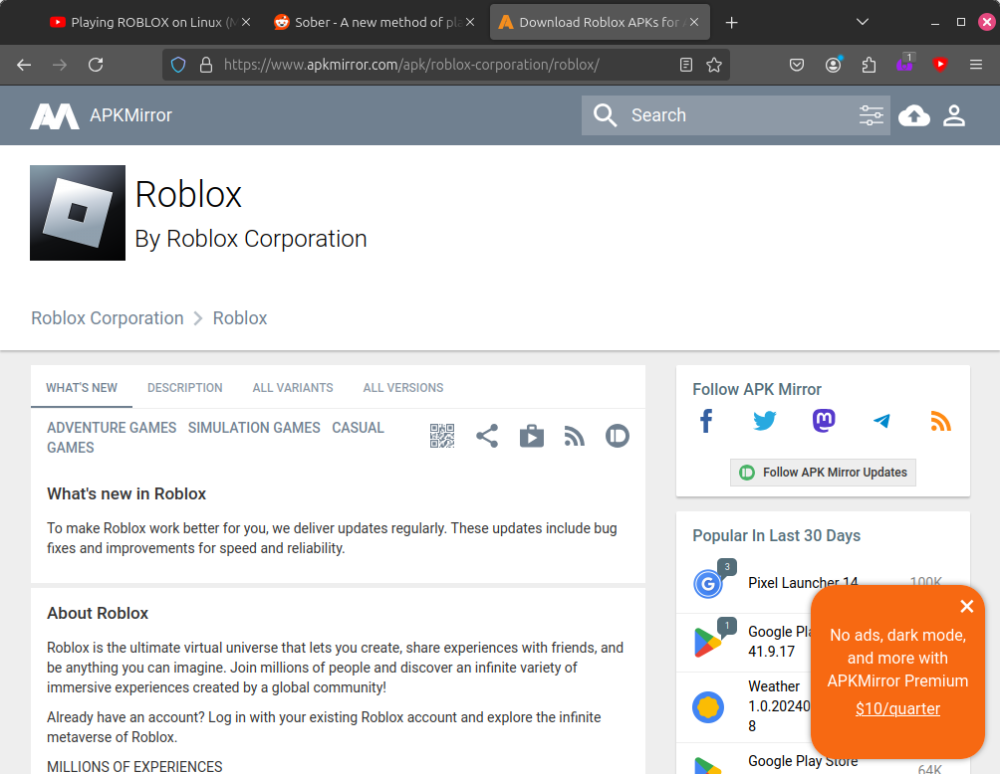
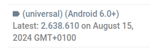
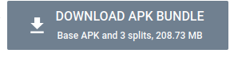
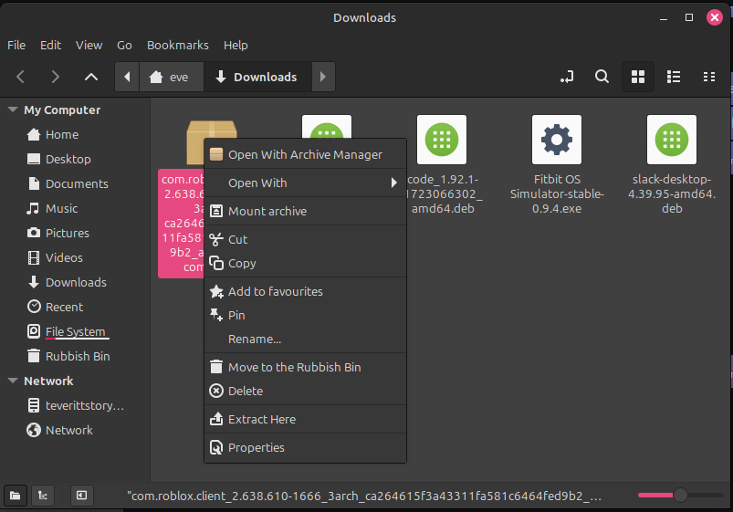
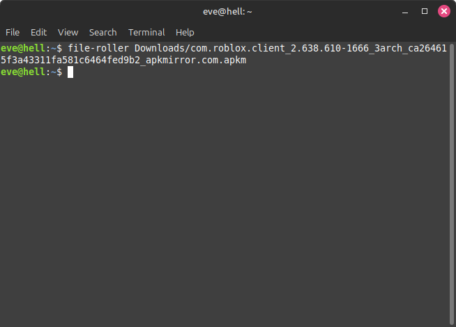
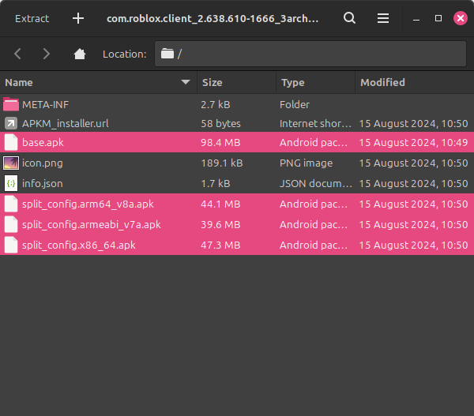

Hello Redditors (And youtube? I think there was a Youtube video that linked to my post)
Somehow, everyone is viewing my random Reddit post about Sober, and asking how to set up the APKs. I eventually added a Google Drive link to the APKs, however they are outdated now and the post is still being viewed so I'm just going to show you how to get them yourself in a barebone HTML page :)
Navigate to Roblox's APKMirror page on your preferred browser, I'm using Firefox.

You want to click on the latest "universal" APK, as this means it works on all architechures including x86_64, which is used in Intel and AMD's processors and is what Sober is built around.

You want to choose the latest version, which should be the top one

Now, click "DOWNLOAD APK BUNDLE".
.
Once it's downloaded, you want to use your DE's built in "Open with" feature to open the file with your preferred archive manager, or type in "[ArchiveManagerName] Downloads/[RobloxAPKName].apk" into your terminal.

Finally, copy these 4 APK files to somewhere cool, and when Sober asks for them make sure you highlight all 4!!

psst.. check out my main website.......